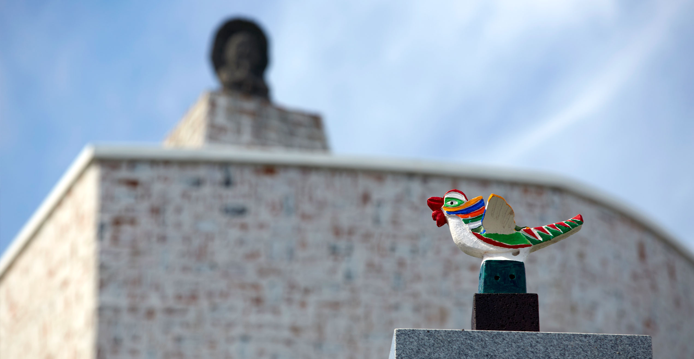

Welcome to
YIC Gallery

독보적인 디자인
YIC에서 확인하세요

YIC에서 확인하세요
서울에 그동안 내가 살던 집을 헐고 큰 작업실이
갖고 싶다는 생각에 도자기를 빚어 건물모형을 만들었다
. 그게 어느덧 3년전 일이다. 우연히 스위스 건축가 D
avid Maccuio와 한만원 건축 설계사와 공동 작업을 하
여 도면을 수정하기를 2년, 그리고 터를 파면서부터 나
는 매일 건축 현장에서 함께했다. 처음엔 새들이 날아
와 놀곳없어진 것이 아쉬웠지만 예전 뜰에 있던 나무들
을 그대로 옮겨다 싦었으니 봄이 오면 새들도 기여하고
찾아 오지 않을까? 작업실뿐 아니라 전시공간을
마련 하였으니 이제는 더 이상 바랄것이
없다. 20여년간 나에게 행복을 주었던 작
은 선물이될수있는 공간이 되기를 바란다. 이건물이 이
루어지도록 물심양면으로 도움을 주신 분들께 두손모아
진심으로 감사드린다.
-2013년 5월 31일 개관-
조선백자에서 모티브를 삼아 유인철화백의 염원을 담아 설계된 인철
미술관은 자연의 빛과 바람이 그대로 전달이 됩니다. 15m 3층, 미술
관 전체넓이 300평 규모의 둥근 모양의 찻잔처럼 완성이 되었습니다.
미술관 1층에는 수장고와 도예실이 있고, 미디어 아트전시관이 마련
되어 있습니다. 2층에는 작가의 평면회화, 도예, 목조각 및 미디어아
트 등으로 구성된 전시실이 있습니다. 3층은 작가의 작업 공간과 작
가가 사용하는 명상실을 공유할수 있습니다.
2016년도에는 옥상정원이 마련되어 남쪽 푸른 바다와 섶섬
, 문섬 ,새섬 및 한라산 정상을 작가의 아름다운 작품과 함께 평화로
이 감상하실 수 있습니다.
커피샵을 겸한 아트샵이 미술관 옆에 자리잡고 있어 판화작품과
휴식을 함께 하실 수 있습니다.
서울에 정착하여 20여년이 넘게 그동안 나는<학교생활의 중
도와 연기>란 주제를 가지고 한결같이 그림을 그리면서 도대
체 인간에게 행복과 불행한 삶은 어디서 오는가 만을 깊게 생각해왔다.
인간이란 세상에 태어나서 잠시 머물다 더없이 지나가는 나그
네란 생각도 해보았고 세상은 참으로 험난하고 고달픈 것이 인
생이라는 것도 생각해 봤다. 살다보니 새로운 조건이 갖춰지면
새로운 것이 생겨나고 또없어지는 자연과 인간의 모습들에서
연기라는 삶의 이치를 발견하고 중도와 더불어 그것을 작품으
로 표현하려고 하루도 쉬지 않고 그림그리는 일에 내 인생을
걸었다. 그 누구나 알지만 말처럼그렇게 마음을 비우는 것은 결코 쉽
지 않다. 이러한 마음이 내재하는한 행복한 삶과는 거리가 멀다
는 생각을 하면서 서서히 흰머리로 덮여가는 내모습을 바라본다.